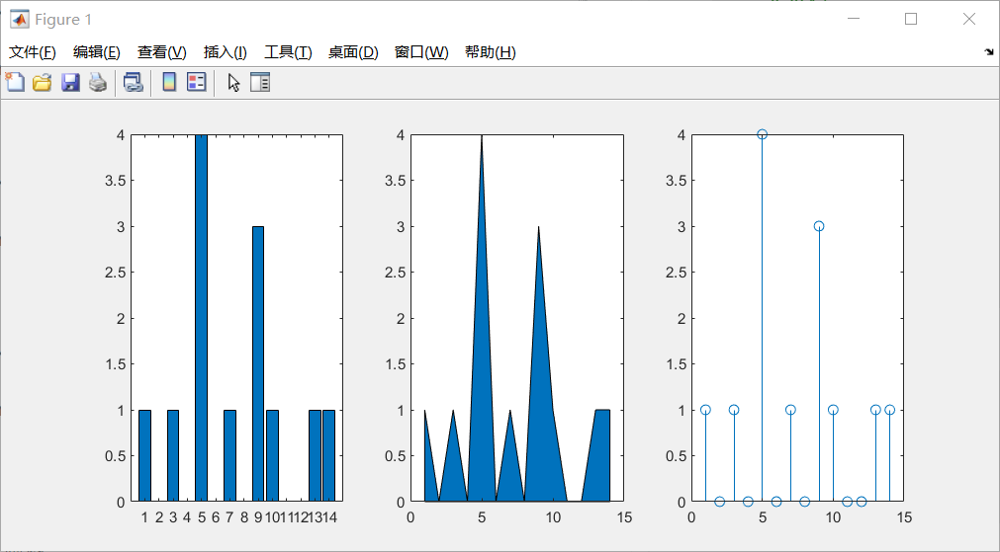
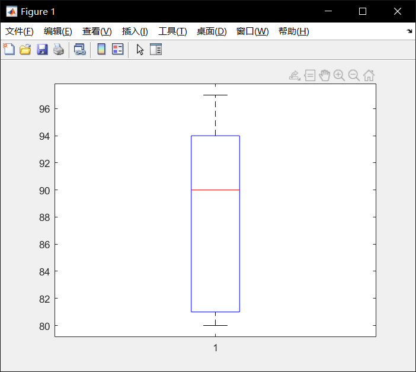
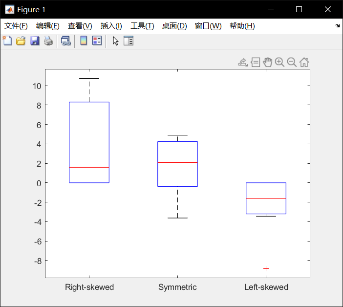
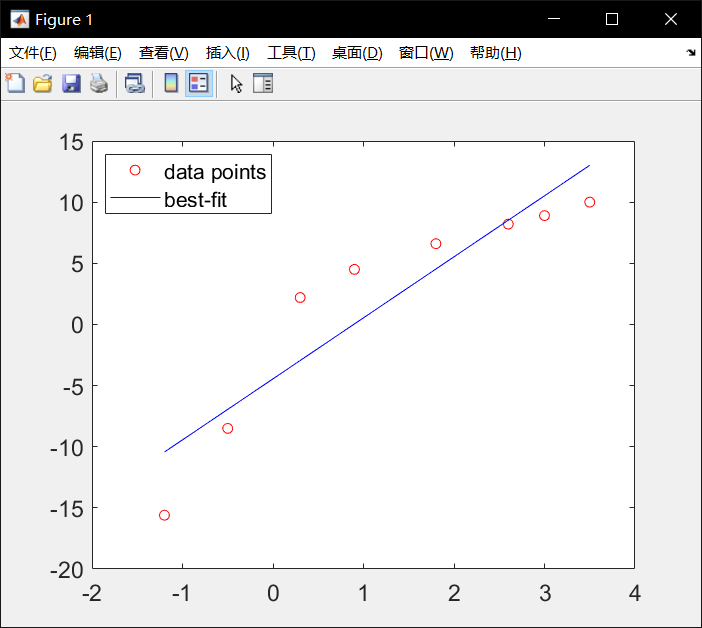
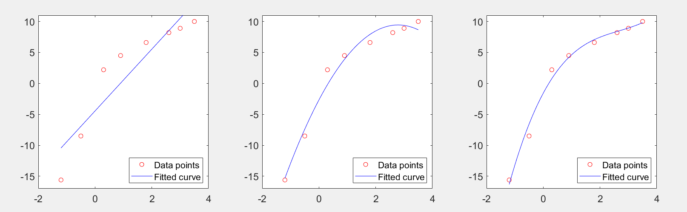
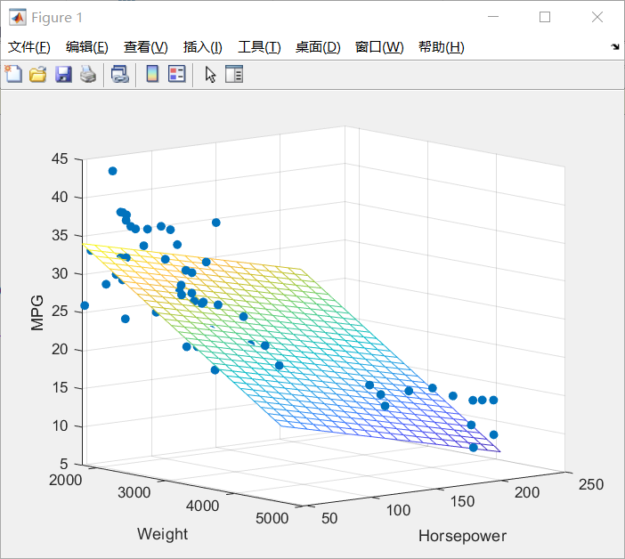
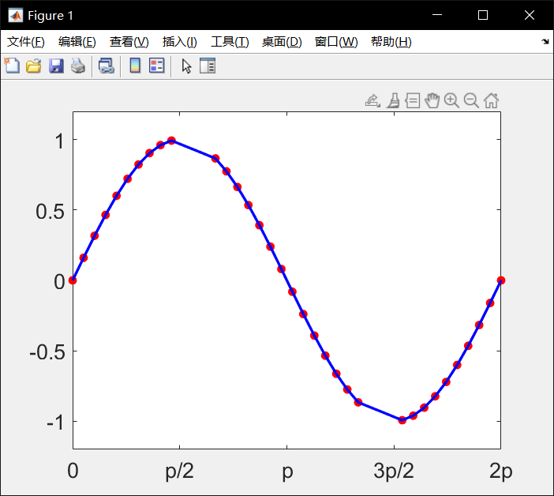
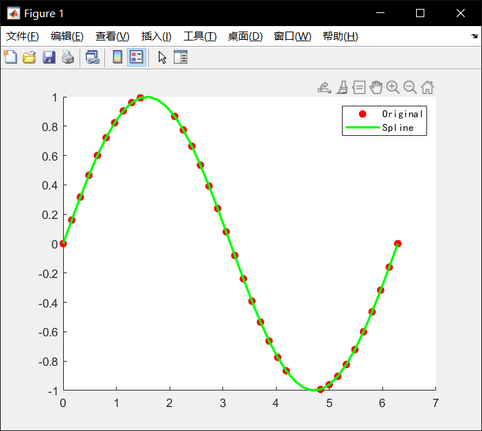

MATLAB笔记7 统计和数据分析 / 曲线拟合和插值
统计操作
Mean算术平均, Median中位数, Mode中位数, and Quartile四分位数
1 | >> load stockreturns; |
- 画图
1
2
3
4
5x = 1:14;
freqy = [1 0 1 0 4 0 1 0 3 1 0 0 1 1];
subplot(1,3,1); bar(x,freqy); xlim([0 15]);
subplot(1,3,2); area(x,freqy); xlim([0 15]);
subplot(1,3,3); stem(x,freqy); xlim([0 15]);
箱线图
1
2
3
4
5
6
7>> marks = [80 81 81 84 88 92 92 94 96 97];
boxplot(marks)
prctile(marks, [25 50 75])
ans =
81 90 94
boxplot 画箱线图， prctile获得分位数
- Skewness偏态 skewness()
1
2
3
4
5
6
7
8>> X = randn([10 3])*3;
X(X(:,1)<0, 1) = 0; X(X(:,3)>0, 3) = 0;
boxplot(X, {'Right-skewed', 'Symmetric', 'Left-skewed'});
y = skewness(X)
y =
0.8167 -0.6878 -1.5176
统计假设检验
- ttest2() 双样本 t 检验
h = ttest2(x,y) 使用双样本 t 检验返回原假设的检验决策，该原假设假定向量 x 和 y 中的数据来自均值相等、方差相同但未知的正态分布的独立随机样本。备择假设是 x 和 y 中的数据来自均值不相等的总体。如果检验在 5% 的显著性水平上拒绝原假设，则结果 h 为 1，否则为 0。
以下例子测试两个样本均值是否相等
1 | >> load stockreturns; |
h=1，故拒绝原假设：x1和x2样本的均值相等；显著水平为5%，而p=0.0423<0.05
曲线拟合
polyfit()
1
2
3>> x =[-1.2 -0.5 0.3 0.9 1.8 2.6 3.0 3.5];
y =[-15.6 -8.5 2.2 4.5 6.6 8.2 8.9 10.0];
fit = polyfit(x,y,1);要进行拟合的散点为（-1.2，-15.6），（-0.5，-8.5）……
polyfit第三参数为1表示用一次函数拟合
函数返回ax+b中的a，b值1
2
3>> xfit = [x(1):0.1:x(end)]; yfit = fit(1)*xfit + fit(2);
plot(x,y,'ro',xfit,yfit,'b'); set(gca,'FontSize',14);
legend('data points','best-fit','location','northwest');
yfit = fit(1)*xfit + fit(2) 表示用一次拟合函数 y=ax+b 拟合
corrcoef() 求相关系数
相关系数 −1 ≤ 𝑟 ≤ 1，越接近于 1 则接近正相关，越接近 -1 则接近负相关
依然是上面的数据，判断 xy 的相关性
1 | >> x =[-1.2 -0.5 0.3 0.9 1.8 2.6 3.0 3.5]; |
相关系数为0.9202接近 1，为正相关
scatter() 功能为画散点图，也称气泡图（点是一个一个圈圈 ooooooo）
高阶多项式拟合
1
2
3
4
5
6
7
8
9>> x =[-1.2 -0.5 0.3 0.9 1.8 2.6 3.0 3.5];
y =[-15.6 -8.5 2.2 4.5 6.6 8.2 8.9 10.0];
figure('Position', [50 50 1500 400]);
for i=1:3
subplot(1,3,i); p = polyfit(x,y,i);
xfit = x(1):0.1:x(end); yfit = polyval(p,xfit);
plot(x,y,'ro',xfit,yfit,'b'); set(gca,'FontSize',14);
ylim([-17, 11]); legend('Data points','Fitted curve','location','southeast');
end
越高阶不一定拟合的越好，可能会过拟合
regress() 多变量的函数拟合
拟合函数形如：𝑦 = 𝛽0 + 𝛽1𝑥1 + 𝛽2𝑥2
1 | load carsmall; |

- 另一用法：
[b,bint,r,rint,stats]=regress(y,X); - 如果方程非线性用 Curve Fitting Toolbox: cftool() 即 曲线拟合工具箱:cftool()；matlab输入
cftool或cftool()
Interpolation 插值
interp1() 线性插值
1
2
3
4
5
6
7
8
9
10
11
12
13
14
15
16
17
18x = linspace(0, 2*pi, 40);
x_m = x;
x_m([11:13, 28:30]) = NaN;
y_m = sin(x_m);
hold on;
plot(x_m, y_m,'ro', 'MarkerFaceColor', 'r');
xlim([0, 2*pi]);
ylim([-1.2, 1.2]);
box on; %显示坐标区轮廓
set(gca, 'FontName', 'yahei', 'FontSize', 16);
set(gca, 'XTick', 0:pi/2:2*pi);
set(gca, 'XTickLabel', {'0', 'p/2', 'p', '3p/2', '2p'});
m_i = ~isnan(x_m);
y_i = interp1(x_m(m_i), ...
y_m(m_i), x);
plot(x,y_i,'-b', ...
'LineWidth', 2);
hold off;
spline() 样条插值
1
2
3
4
5
6
7
8m_i = ~isnan(x_m);
y_i = spline(x_m(m_i), y_m(m_i), x);
hold on;
plot(x_m, y_m,'ro', 'MarkerFaceColor', 'r');
plot(x,y_i,'-g', 'LineWidth', 2);
hold off;
h = legend('Original', 'Spline');
set(h,'FontName', 'kaiti');
三次样条插值和 Hermite 多项式
1
2
3
4
5
6
7
8
9
10
11
12
13x = -3:3;
y = [-1 -1 -1 0 1 1 1];
t = -3:.01:3;
s = spline(x,y,t);
p = pchip(x,y,t);
hold on;
plot(t,s,':g', 'LineWidth', 2);
plot(t,p,'--b', 'LineWidth', 2);
plot(x,y,'ro', 'MarkerFaceColor', 'r');
hold off;
box on;
set(gca, 'FontSize', 16);
h = legend(2,'Original', 'Spline', 'Hermite');interp2() meshgrid 格式的二维网格数据的插值
1
2
3
4
5
6xx = -2:.5:2;
yy = -2:.5:3;
[X,Y] = meshgrid(xx,yy);
Z = X.*exp(-X.^2-Y.^2);
surf(X,Y,Z); hold on;
plot3(X,Y,Z+0.01,'ok','MarkerFaceColor','r')1
2
3
4
5
6xx_i = -2:.1:2;
yy_i = -2:.1:3;
[X_i,Y_i] = meshgrid(xx_i,yy_i);
Z_i = interp2(xx,yy,Z,X_i,Y_i);
surf(X_i,Y_i,Z_i); hold on;
plot3(X,Y,Z+0.01,'ok','MarkerFaceColor','r')样条二维插值
1
2
3
4
5
6
7
8
9
10
11
12xx = -2:.5:2;
yy = -2:.5:3;
[X,Y] = meshgrid(xx,yy);
Z = X.*exp(-X.^2-Y.^2);
xx_i = -2:.1:2;
yy_i = -2:.1:3;
[X_i,Y_i] = meshgrid(xx_i,yy_i);
Z_c = interp2(xx,yy,Z,X_i,Y_i,'cubic');
surf(X_i,Y_i,Z_c);
hold on;
plot3(X,Y,Z+0.01,'ok', 'MarkerFaceColor','r');
hold off;
- B站教程链接
https://www.bilibili.com/video/BV1GJ41137UH
台大郭彦甫matlab教程: 点击链接